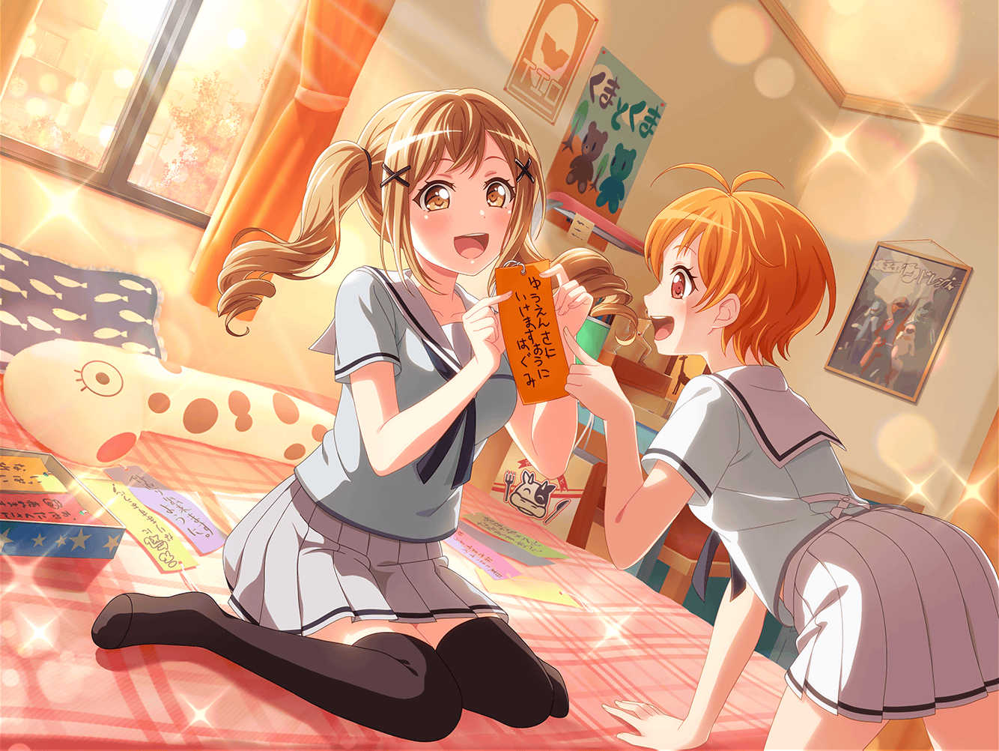

昼休み
花咲川女子学園 １-B教室
香澄
あーりさ！
はい！ 有咲に、これあげるね！
有咲
ん？ 何だこの紙切れは？
香澄
紙切れじゃないって、短冊だよ、短冊！
有咲
短冊？
香澄
昨日、商店街行ったら配ってたから、
有咲の分ももらっておいたんだ
香澄
有咲は、なんてお願いごと書くの？
有咲
は？ 別に私は、そういうのやらねーし
香澄
え？ だって七夕だよ？
普通、短冊にお願いごと書くじゃん！？
有咲
子供じゃないんだから、そんなことやらねーって。
つーか、私的には子供のころから、
１回もやったことねーけど
香澄
えぇぇっ！？ なんで！？
有咲は七夕のお願いごとしたことないの！？
それじゃあ、なおさらやろうよ！
有咲
だから、私はいいって、そういうのは
香澄
そんなのダメだよー。
一緒にお願いごと書こうよー、有咲ぁ～
有咲
そ、そんな、しがみつくなって……っ！
……ったく、わかったよ、やればいいんだろ、やれば！
香澄
えへへ～♪ やったー！
有咲と一緒にこういうことができるの嬉しいなー
有咲
……っ！
香澄の言うことって、ホント意味わかんねーよな
香澄
それじゃあ、短冊はここに置くからね。
たくさんもらってきたから、たくさん書こうね！
有咲
香澄……
いくらなんでも、その量は多すぎじゃね？
その紙、何枚もらってきたんだよ……？
香澄
わかんないけど、商店街の人たくさんくれたよ？
これだけあれば、たくさんお願いごとが書けるよね！？
有咲
いやいや、絶対こんなに書くことねーって
香澄
そうかな？
私はお願いごと、たくさんあるけどな。
昨日の夜からずーっと考えてたんだ！
香澄
それじゃあ、一緒にやってみよー！
１０分後
香澄
どう、有咲？
お願いごと、書けた？
有咲
いや、まだ書けない。
香澄は？
香澄
『これからも、みんなとずっと友達でいられますように』でしょ？
あとは『ライブがたくさんできますように』とか……
だいたい１０個くらい書いたよ
有咲
１０個！？
もうそんなにたくさん書いたのかよ？
有咲
そんなにたくさんお願いごとがあるって、
ある意味すごいことだな
香澄
そうかな？
有咲も、早くお願いごと書きなよー。
有咲は、なんて書くのかな～♪
有咲
つーか、あんまりこっち見るなって。
書きづらいだろ？
香澄
あ、ごめん、見ない見ない
有咲
……ったく
香澄
…………書けた？
有咲
まーだ
香澄
そっか……
有咲
…………
香澄
……そろそろ書けたんじゃない？
有咲
だから、まだだって言ってるだろ！
そんなチラチラ見られたら、
書けるものも書けないっての！
香澄
だって～、有咲がどんなお願いごとするのか
気になるんだもーん。
早く書いてよー
有咲
……ったく、わかったよ！ 言っとくけど絶対こっち見るなよ！
はい、こんな感じで……はい、書けました。
これでいいんだろ？
香澄
わ、ホント！？
有咲、お願いごと書けたんだ！
有咲
つーか、すっげー適当だぞ？
香澄
それじゃあ、その短冊ちょうだい！
商店街の笹飾りにつるしてもらうから！
有咲
はぁ！？ 何それ！？
そんな話、聞いてねーけど！？
香澄
だって、ちゃんと笹に結びつけないと
お願いごとは叶わないんだよ？
香澄
だから、はい！
有咲の短冊も預かっておくね！
有咲
こ、断るっ！
香澄
え～、なんで～？
そんな、後ろに隠すことないじゃ～ん！
有咲
……あ！
よく見たら字を間違えてたから、これは書き直し！
香澄
……ん？
んんん！？
有咲
な、なんだよ……
香澄
うしろの窓に映ってる……
えっと『これからもずっと、みんなと……』
有咲
ちょっ、ちょっと、待てって！
香澄
あっ、見えなくなっちゃった……っ。
もう１回見せて！ ね～、有咲ぁ！
有咲
ムリ！ ムリムリムリ！
ぜーーーったい、見せない！
こ、こっち来るなって！！